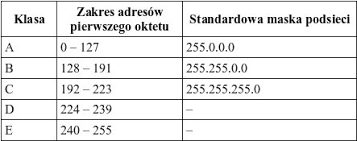

TCP/IP (ang. Transmission Control Protocol / Internet Protocol) - to zespół protokołów sieciowych używany w sieci Internet. Najczęściej wykorzystują go systemy Unixowe oraz systemy Windows, choć można stosować go również w systemach Novell NetWare. Zadanie protokołu TCP/IP polega na dzieleniu danych na pakiety odpowiedniej wielkości, ponumerowaniu ich w taki sposób, aby odbiorca mógł sprawdzić, czy dotarły wszystkie pakiety oraz ustawieniu ich we właściwej kolejności. Kolejne partie informacji wkładane są do kopert TCP, a te z kolei umieszczane są w kopertach IP. Oprogramowanie TCP po stronie odbiorcy zbiera wszystkie nadesłane koperty, odczytując przesłane dane. Jeśli brakuje którejś koperty, wysyła żądanie ponownego jej dostarczenia. Pakiety wysyłane są przez komputery bez uprzedniego sprawdzenia, czy możliwa jest ich transmisja. Może się zdarzyć taka sytuacja, że do danego węzła sieci, gdzie znajduje się router, napływa więcej pakietów, aniżeli urządzenie może przyjąć, posegregować i przesłać dalej. Każdy router posiada bufor, który gromadzi pakiety czekające na wysłanie. Gdy bufor ulegnie całkowitemu zapełnieniu, nowo nadchodzące pakiety zostaną odrzucone i bezpowrotnie przepadną. Protokół, który obsługuje kompletowanie pakietów zażąda więc wtedy ponownego ich wysłania.

IP (Internet Protocol) - to protokół do komunikacji sieciowej, gdzie komputer klienta wysyła żądanie, podczas gdy komputer serwera je wypełnia. Protokół ten wykorzystuje adresy sieciowe komputerów zwane adresami IP. Są to 32-bitowa liczby zapisywana jako sekwencje czterech ośmiobitowych liczb dziesiętnych (mogących przybierać wartość od 0 do 255), oddzielonych od siebie kropkami. Adres IP dzieli się na dwie części: identyfikator sieciowy (network id) i identyfikator komputera (host id). Istnieje kilka klasy adresowych, o różnych długościach obydwu składników. Obowiązujący obecnie sposób adresowania ogranicza liczbę dostępnych adresów, co przy bardzo szybkim rozwoju Internetu jest dla niego istotnym zagrożeniem. W celu ułatwienia zapamiętania adresów wprowadzono nazwy symboliczne, które tłumaczone są na adresy liczbowe przez specjalne komputery w sieci, zwane serwerami DNS.
SLIP
SLIP (ang. Serial Line Interface Protocol) - to protokół transmisji przez łącze szeregowe. Uzupełnia on działanie protokołów TCP/IP tak, by możliwe było przesyłanie danych przez łącza szeregowe.
PPP

Point to Point Protocol - to protokół transferu, który służy do tworzenia połączeń z siecią Internet przy użyciu sieci telefonicznej i modemu, umożliwiający przesyłanie danych posiadających różne formaty dzięki pakowaniu ich do postaci PPP. Steruje on połączeniem pomiędzy komputerem użytkownika a serwerem dostawcy internetowego. PPP działa również przez łącze szeregowe. Protokół PPP określa parametry konfiguracyjne dla wielu warstw z modelu OSI (ang. Open Systems Interconnection). PPP stanowiąc standard internetowy dla komunikacji szeregowej, określa metody, za pośrednictwem, których pakiety danych wymieniane są pomiędzy innymi systemami, które używają połączeń modemowych.
Adresowanie sieci
Adres IP
unikalny adres nadawany interfejsowi sieciowemu, grupie interfejsów, lub całej sieci komputerowej, mający na celu identyfikację elementów warstwy sieciowej modelu OSI. Adres IP może być stały lub zmienny. Nie identyfikuje jednoznacznie fizycznego urządzenia. W najpopularniejszej wersji czwartej (IPv.4), złożony jest z 4 oktetów oddzielonych kropkami, czyli jest ciągiem 32 zer i jedynek (bitów). Każdy oktet opisuje liczbę dziesiętną z zakresu 0-255, ponieważ:
00000000 (w systemie binarnym) = 0 (w systemie dziesiętnym),
11111111 (w systemie binarnym) = 255 (w systemie dziesiętnym).
Podstawowe pojęcia
DHCP (ang. Dynamic Host Configuration Protocol)- adresowanie umożliwiające dynamiczne przydzielanie adresów oraz innych elementów konfiguracji (bramka, maska). Serwer DHCP dysponuje pewną pulą adresów, które przydziela zgłaszającym się do niego hostom.
Brama sieciowa (ang. Gateway)- urządzenie sieci komputerowej, za pomocą którego komputery z sieci lokalnej komunikują się z komputerami w innych sieciach. Gdy brama sieciowa jest routerem, trasuje wówczas pakiety między sieciami, za pomocą protokołów TCP/IP lub innych protokołów trasowanych.
Maska sieciowa (ang. network mask, address mask)- liczba umożliwiająca wyodrębnienie w adresie sieciowym IP, adresu sieci, adresu hosta w sieci oraz adresu rozgłoszeniowego.
Adres rozgłoszeniowy (ang. broadcast)- adres, za pomocą którego wysyłane są przez jeden port (kanał informacyjny) pakiety, które powinny być odebrane przez wszystkie pozostałe porty przyłączone do danej sieci (domeny broadcastowej).
Translacja NAT
(ang. Network Address Translation) jest to sposób przesyłania ruchu sieciowego poprzez router. Polega na zmianie źródłowych lub docelowych adresów IP lub numerów portów TCP/UDP pakietów IP, podczas ich przepływu. Systemy korzystające z translacji NAT mają na celu umożliwienie dostępu wielu hostom w sieci prywatnej dostępu do Internetu, przy wykorzystaniu pojedynczego, publicznego adresu IP, za pomocą bramy sieciowej. Translacja może być dynamiczna i wówczas jeden adres IP tłumaczony jest na dowolną ilość adresów wewnętrznych, przydzielanych zwykle przez serwer DHCP.
Rodzaje translacji NAT:
SNAT (ang. Source Network Address Translation)- stosuje się w przypadku podłączenia sieci dysponującej adresami prywatnymi do sieci Internet. Router podmienia adres źródłowy, prywatny na adres publiczny (np. własny),
DNAT (ang. Destination Network Address Translation)- stosuje się w przypadku gdy serwer, który ma być dostępny z Internetu, ma tylko adres prywatny. Router dokonuje translacji adresu docelowego pakietów IP z Internetu na adres tego serwera.